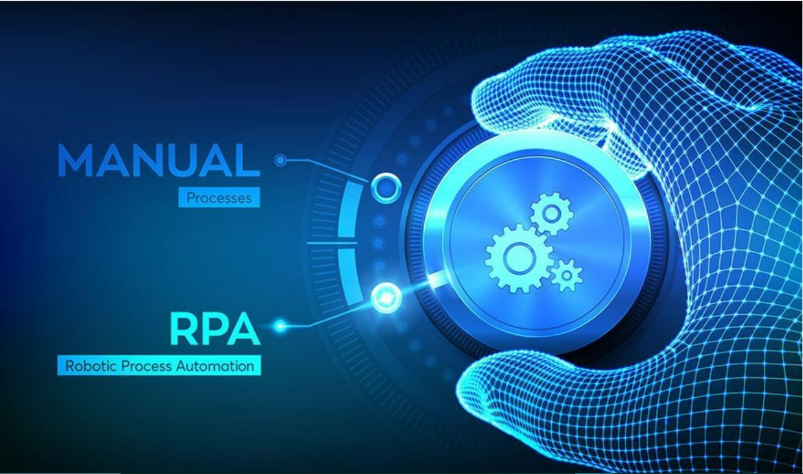

Blog By - Sandeep Kumar
Favourite movies - recommended :-
I love watching scince finction , thriller , adventures movies as one of my favourite hobby, I would like to recommend you my all time favourite movies. If you havne't watched yet have a look once.
- Avengers all parts : 2012, 2015, 2018, 2019
- Ths Shape of water : 2017
- Iron man all 3 parts : 2008, 2010, 2013
- journey to the mysterious island: 2012
- kingsman the golden circle: 2017
Drawing tips - In fun way :-
I am not a great artits although i can drwa beautifull drawings.I am making drawings since i was of 8, as per my persnoal exprience if you wanna make beautifull drawings follow following points
- Start from basics and have patience: at early stage don't try to make difficult paitnings/ drawings keep calm and practice as much you can. first draw some basic body perts, objects, faces etc this will build your basics.
- Don't Ignore tiny portions: while making drawings always make tiny portions very picefully, if you thing small areas whould not effect your drawind , you are wrong as " Drop By Drop Fills The ocean" always make small parts beautifull you entire art will start looking extremely attractive.
Interesting Technologies
1.Artificial Intelligence (AI) and Machine Learningz :

the ability of a digital computer or computer-controlled robot to perform tasks commonly associated with intelligent beings. The term is frequently applied to the project of developing systems endowed with the intellectual processes characteristic of humans, such as the ability to reason, discover meaning, generalize, or learn from past experience
2.Robotic Process Automation (RPA) :
Robotic process automation (RPA) is a software technology that makes it easy to build, deploy, and manage software robots that emulate humans actions interacting with digital systems and software. Just like people, software robots can do things like understand what’s on a screen, complete the right keystrokes, navigate systems, identify and extract data, and perform a wide range of defined actions. But software robots can do it faster and more consistently than people, without the need to get up and stretch or take a coffee break.

Life Hacks
- If you have trouble making a decision, flip a coin. While you're waiting to get the result, your mind automatically starts to wish for what it wants.
- If there's a jar or container you can't open, run the lid under hot water for 30 seconds.
- The easiest way to remove blood stains is to use bar soap and handwash it
- Remember that five minutes of daily exercise is infinitely better than zero minutes.